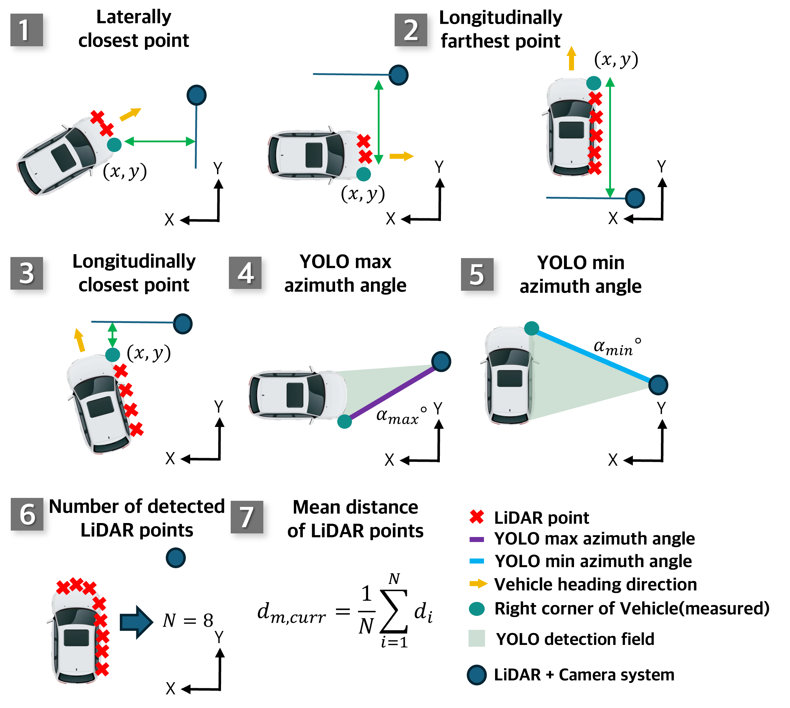
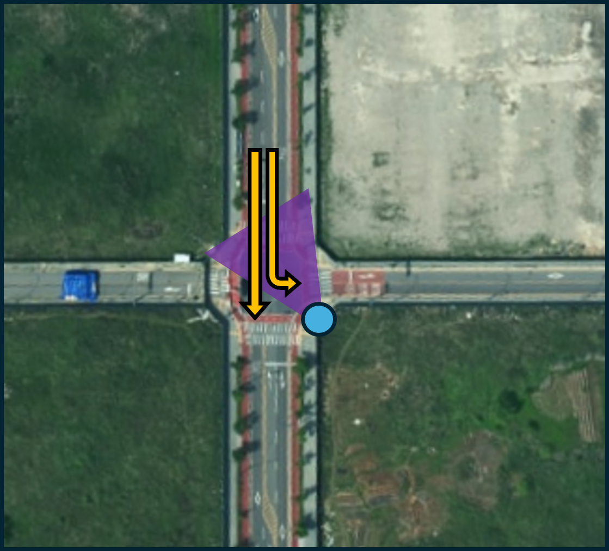

관측 후보 5종
RANSAC 교점, YOLO 방위각과 선 모델, 최근접 LiDAR 포인트, IMM 예측점을 동일한 행동 후보로 구성.
MASTER'S THESIS · SENSOR FUSION
교차로의 가림과 센서 노이즈에 대응하기 위해 DQN이 관측 후보를 선택하고 IMM이 차량 상태를 추정하는 저비용 도로변 센서 시스템.

01 / PROBLEM
차량 간 가림과 LiDAR 이상치가 반복되는 교차로에서 고정 규칙 기반 융합은 관측 품질이 달라질 때 추적을 회복하지 못하는 문제.
02 / DESIGN
RANSAC 교점, YOLO 방위각과 선 모델, 최근접 LiDAR 포인트, IMM 예측점을 동일한 행동 후보로 구성.
매 시점 후보의 순위를 학습해 가림과 노이즈 조건에 맞는 관측값 선택.
CVP와 CTP 운동 모델을 결합해 차량의 위치, 속도, 방위각 추정.
센서 해상도와 입사각 특성을 시뮬레이션에 반영하고 학습 정책을 재학습 없이 현장 적용.
03 / EVIDENCE



04 / DOCUMENTS